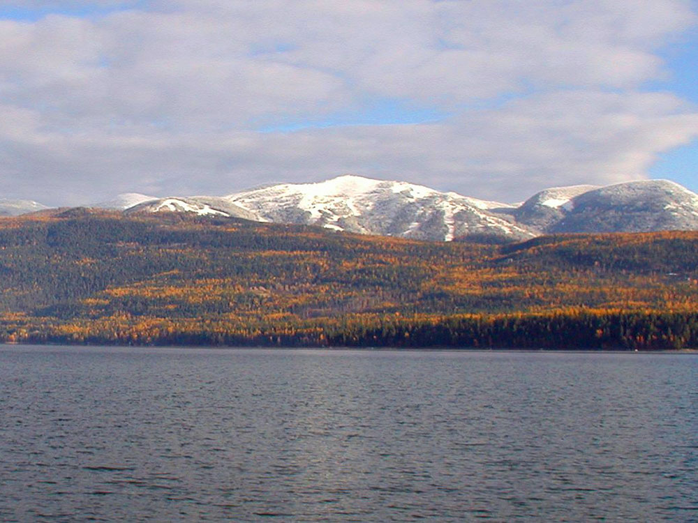
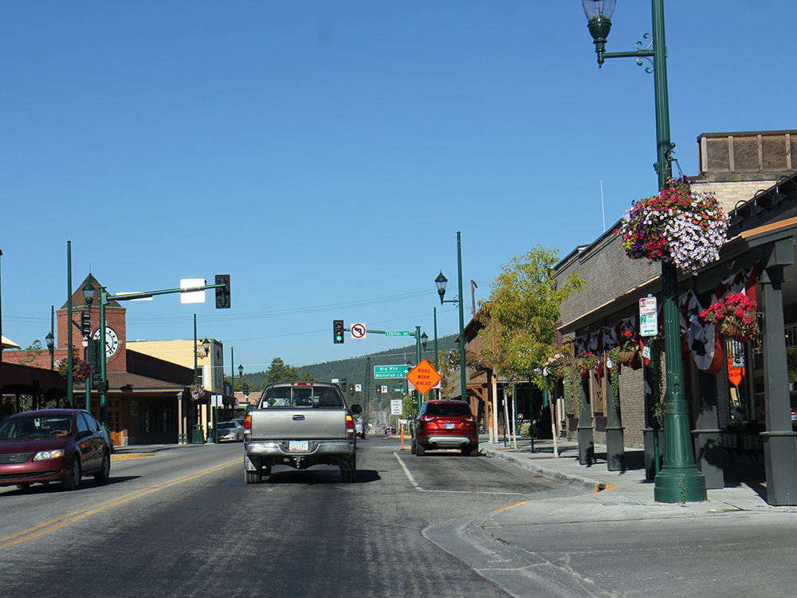
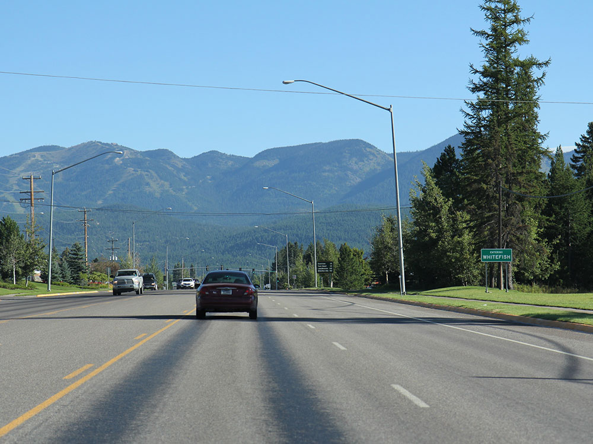

Ghost town and National Historic Landmark preserving Old West period buildings that have been added to the National Register of Historic Places
General Information
From Bozeman (66 miles): Head west on W Olive St toward S 5th Ave. Turn right onto S 8th Ave. Turn left onto US-191 S/W Main St. Continue onto MT-84 W/Norris Rd. Turn left onto US-287 S. Turn right onto MT-287 N/W Main St. Turn right onto Van Buren St.
Overview
Whitefish is a resort town in northwestern Montana, on the shore of Whitefish Lake and at the foot of Big Mountain, and it is known as the gateway to Glacier National Park, about 25 miles to the east. Founded as a railroad town, it has become a year-round destination for skiing, hiking, boating, and fishing, with a lively downtown of restaurants, galleries, and breweries. The Whitefish Mountain Resort, one of the largest ski areas in Montana, overlooks the town, and the Amtrak Empire Builder stops at its historic depot.
Visitors come to Whitefish for skiing at Whitefish Mountain Resort, for the Whitefish Lake and the beaches of Whitefish Lake State Park, and as a base for exploring Glacier National Park. They also come for the Whitefish Trail, for the historic Whitefish Depot, for fly fishing, and for the Winter Carnival in February.
History
The Kootenai and Salish peoples lived in the area, and the town was named for the whitefish in the lake. The Great Northern Railway built a depot in Whitefish in 1904, and the town became a division point for the railroad and a timber center, with loggers and railroad workers. In 1947, the Big Mountain Ski Resort opened and began a tourism industry, and the arrival of Glacier National Park visitors added to the economy. The railroad's Empire Builder still stops in Whitefish, and the town has maintained its Western character while developing into a modern resort town.
Sightseeing and Popular Landmarks
Downtown Whitefish has a lively main street with shops, restaurants, and brewpubs, including the historic Great Northern Depot, built in 1927. The Whitefish Mountain Resort has more than 3,000 acres of skiing and a summer gondola to the top of Big Mountain, with views of Glacier National Park and Flathead Valley. Whitefish Lake State Park has a beach and boat launch, and the Whitefish Trail has more than 40 miles of trails around the area. The Stumptown Historical Society and the Whitefish Museum cover local history.
Culture and Museums
The Stumptown Historical Society's museum, in the old Great Northern depot, has exhibits on the town's railroad and logging history, and the Whitefish Theatre Company and the Whitefish Arts Council host performances. The Whitefish Winter Carnival in February, with a parade and a "Kandahar" ski race, is a long-standing tradition, and the Huckleberry Days festival in August celebrates the local fruit. Summer concerts at Depot Park are popular.
Parks
Glacier National Park's west entrance is about 25 miles from Whitefish, with the Going-to-the-Sun Road, glaciers, and wildlife, and the Flathead National Forest surrounds the town. Whitefish Lake is popular for swimming, boating, and fishing, and the Whitefish Trail and Beaver Lake offer hiking and biking. Hungry Horse Reservoir, the Flathead River, and Flathead Lake are within an hour's drive.
Seasons and Weather
Whitefish has a cool continental climate. Summers are warm, with highs in the 70s and 80s°F, and winters are cold and snowy, with highs in the 20s and 30s°F and about 100 inches of snow, and more than 300 inches on the mountain. Ski season runs from late November to April, and the Going-to-the-Sun Road in Glacier is usually open from late June to mid-October.
Things to Do
Experience Montana's Premier Mountain Town
Whitefish is one of Montana's most popular outdoor destinations, located in the Flathead Valley near Glacier National Park. Surrounded by mountains, forests, lakes, and rivers, the town offers year-round recreation, scenic beauty, and a vibrant downtown filled with shops, restaurants, galleries, and local events.
Explore Whitefish Mountain Resort
Whitefish Mountain Resort offers recreation throughout the year, including skiing and snowboarding in winter and hiking, mountain biking, scenic chairlift rides, and festivals during the summer months. Visitors can enjoy sweeping views of Glacier National Park, Whitefish Lake, and the Flathead Valley.
Visit Whitefish Lake
Whitefish Lake is a favorite destination for boating, kayaking, paddleboarding, swimming, fishing, and relaxing along the shoreline. The lake's crystal-clear waters and mountain backdrop make it one of the most scenic attractions in northwest Montana.
Explore the Whitefish Trail System
The Whitefish Trail is a community-supported trail network featuring more than 40 miles of non-motorized trails. The system connects forests, lakes, wildlife habitat, scenic overlooks, and recreation areas throughout the Whitefish area, offering excellent opportunities for hiking, biking, trail running, and wildlife viewing.
Discover Glacier National Park
Located less than an hour from Whitefish, Glacier National Park offers spectacular mountain scenery, alpine lakes, wildlife viewing, scenic drives, and some of the most famous hiking trails in North America. Whitefish serves as a popular base camp for park visitors.
Enjoy Downtown Whitefish
The walkable downtown district features historic buildings, local boutiques, art galleries, coffee shops, breweries, and restaurants. Visitors can enjoy a lively mountain-town atmosphere while exploring locally owned businesses and cultural attractions.
Experience Outdoor Recreation Year-Round
In addition to hiking and skiing, Whitefish offers mountain biking, fly fishing, rafting, golf, horseback riding, wildlife viewing, snowshoeing, and cross-country skiing. The area is known as one of the outdoor recreation capitals of the Northern Rockies.
Top Trails
Danny On Trail
Length: Approximately 3.8 miles one way
Elevation Gain: Significant
Difficulty: Moderate to Challenging
This signature Whitefish Mountain hike climbs to the summit of Big Mountain and offers panoramic views of Glacier National Park, Whitefish Lake, and the Flathead Valley. It is one of the area's most popular hiking experiences.
Lion Mountain Loop
Length: Approximately 2.5 to 4 miles depending on route
Elevation Gain: Moderate
Difficulty: Easy to Moderate
Located within the Whitefish Trail system, Lion Mountain features scenic forest trails, wildlife habitat, and beautiful overlooks of Whitefish Lake and the surrounding landscape.
Beaver Lakes Trail
Length: Approximately 4 miles round trip
Elevation Gain: Moderate
Difficulty: Moderate
This popular route explores a network of lakes surrounded by protected forest lands. Hikers enjoy peaceful scenery, wildlife viewing opportunities, and access to one of the most scenic sections of the Whitefish Trail system.
Whitefish River Trail
Length: Approximately 2 to 3 miles
Elevation Gain: Minimal
Difficulty: Easy
A family-friendly trail that follows the Whitefish River through natural areas and open spaces. The route is ideal for walking, jogging, birdwatching, and enjoying a relaxing outdoor experience close to downtown.
Lupfer Lookout Trail
Length: Approximately 4 miles round trip
Elevation Gain: Moderate
Difficulty: Moderate
This trail climbs through forested terrain to a scenic overlook with expansive views of the Stillwater Valley, Whitefish area, and surrounding mountain ranges.
Sources: Official Whitefish Trail information covering trail systems, recreation opportunities, trailheads, scenic overlooks, and conservation areas.
Whitefish Trail System
Additional hiking information covering Whitefish Mountain Resort trails, Danny On Trail, local trail networks, and regional outdoor recreation opportunities.
Hiking Near Whitefish, Montana
Supplemental visitor information regarding hiking, Whitefish Lake recreation, Glacier National Park access, and outdoor activities throughout the Whitefish area.
https://www.explorewhitefish.com/Explore Whitefish Montana
This article uses material from Wikipedia as well as information from official tourism and institutional sources. Key references include Whitefish Chamber of Commerce, Whitefish Mountain Resort, National Park Service Glacier National Park, Montana Office of Tourism, and National Weather Service Missoula. Wikipedia material is from the article "Whitefish, Montana", and is available under the Creative Commons Attribution-Share-Alike License 3.0.


